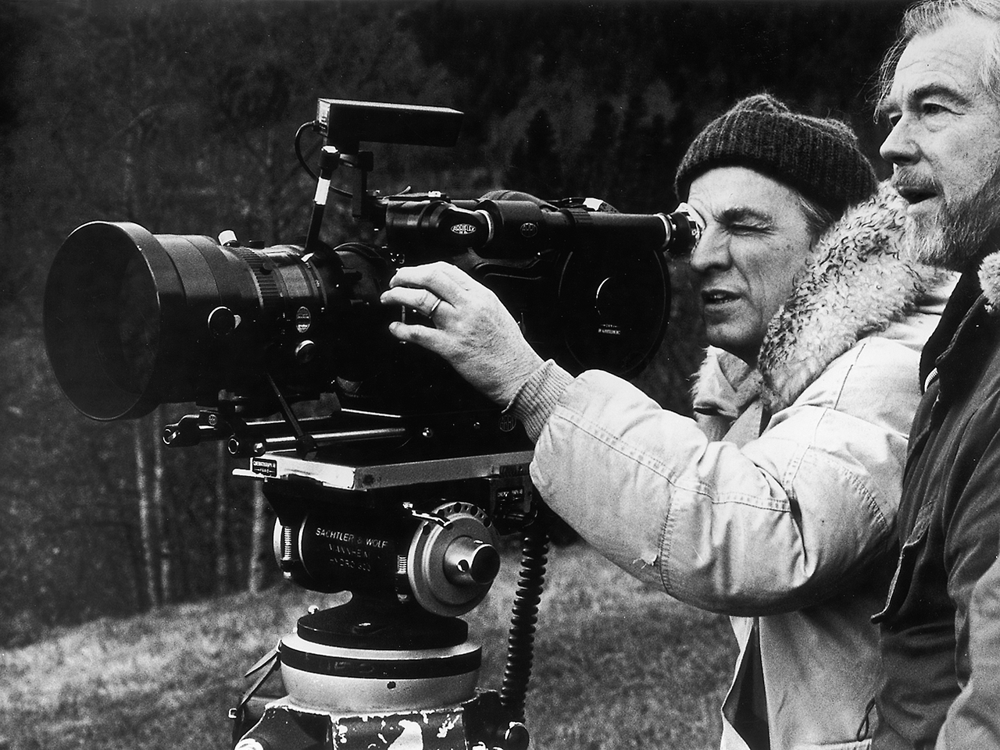

June 28, 2026

My past year, particularly my last six months, have been extremely light on photography. At least light in comparison to past years, to 2020 or say 2023. At some point it stopped, and it stopped pretty hard. The past four months I’ve been dealing with moving states and starting a new job - but I don’t think that’s why it stopped. There has been plenty of downtime, plenty to photograph. I think instead it stopped because I felt unable to commit to anything but photography.
From my journal, 12 days ago:
I constantly feel the urge to make something but almost never do. I’m so concerned with “am I a photographer” or “I can’t do that, I’m a photographer”. It’s an Internet thing, it’s not a real problem. It’s all about expectations certain people my age have about creating a persona online rather than acting like a person. Persona vs. person. It’s why I never feel totally satisfied with a profile pictures, or a bio, or a post. Because it doesn’t (can’t) feel like me, the person. It’s always a persona. It’s always filtered through the platform. And so it’s always meant to be pulled back, mysterious, a half-truth.
I go on to say that I hate social media, and that I just want to email people. That’s still mostly true. That bit I wrote was, at the time of writing, more focused on my online presence. Today I read it and see it as a way of explaining how I fail to make art, to make photographs.
I am constantly, without fail, reductive before the act of creation even begins. Often reductive enough to snuff out any idea at its genesis. Big word…its beginning. Ideas are constantly filtered through seemingly rigid beliefs about who I am as an artist, as a communicator, as a person. They are filtered so heavily that I think I have them subconsciously and dispose of them subconsciously. The ones that stick are disposed of consciously, ad nauseam.
The sparse work that is produced with this mindset has two qualities: it’s derivative because it’s something I’ve seen work before, and it’s fake because it passed all of my brain’s stupid tests. It is a shitty reflection of what I see elsewhere and what I think art should be. Everything original is stripped and transformed.
So when I sit down to do anything I find the work already done. The ideas have been dealt with already, tidied up and stored away. They might come back but I know how to deal with them when they do.
When you have nothing, no project that feels worthwhile - how the fuck do you start something true, something complex, something personal?
From film director Ingmar Bergman’s book Images, page thirty-four:
Exhaustion does not mean that you simplify but that you complicate; you sink your teeth into something and do too much. Every spare battery is connected and the revolutions are accelerated; the critical judgement is weakened; and the wrong decisions are made, since you are unable to make the right ones.
You connect all the spare batteries. You pull out all of your shit and you make something you know is bad, because at least it will be original. The idea that feels silly is the idea you must listen to. Self-censorship is for suckers. Make seemingly arbitrary, ridiculous decisions that only you understand. Assume no one will ever see it, because let’s be real, they probably won’t. And if they do, they won’t for long. And if they look at it for long, they will understand it in a different way than you anyways. And that’s okay, that’s how it will always be, that’s the reason for it all.
Your job is to create a heap of beauty that only you can half-understand and that critics and curators can try an analyze until the sun expands.
*